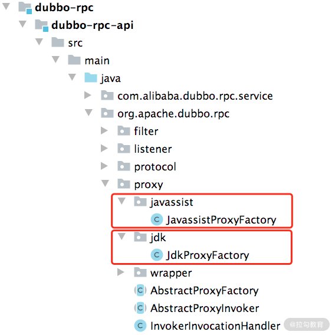
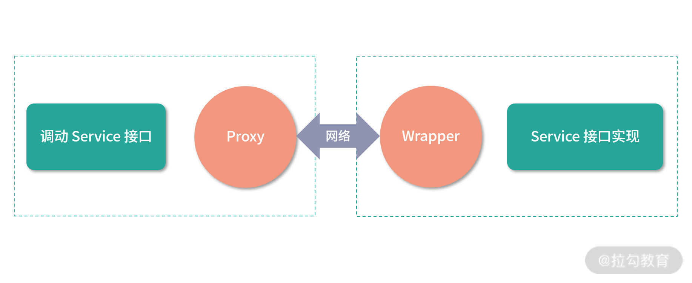

- 00 开篇词 深入掌握 Dubbo 原理与实现，提升你的职场竞争力.md.html
- 01 Dubbo 源码环境搭建：千里之行，始于足下.md.html
- 02 Dubbo 的配置总线：抓住 URL，就理解了半个 Dubbo.md.html
- 03 Dubbo SPI 精析，接口实现两极反转（上）.md.html
- 04 Dubbo SPI 精析，接口实现两极反转（下）.md.html
- 05 海量定时任务，一个时间轮搞定.md.html
- 06 ZooKeeper 与 Curator，求你别用 ZkClient 了（上）.md.html
- 07 ZooKeeper 与 Curator，求你别用 ZkClient 了（下）.md.html
- 08 代理模式与常见实现.md.html
- 09 Netty 入门，用它做网络编程都说好（上）.md.html
- 10 Netty 入门，用它做网络编程都说好（下）.md.html
- 11 简易版 RPC 框架实现（上）.md.html
- 12 简易版 RPC 框架实现（下）.md.html
- 13 本地缓存：降低 ZooKeeper 压力的一个常用手段.md.html
- 14 重试机制是网络操作的基本保证.md.html
- 15 ZooKeeper 注册中心实现，官方推荐注册中心实践.md.html
- 16 Dubbo Serialize 层：多种序列化算法，总有一款适合你.md.html
- 17 Dubbo Remoting 层核心接口分析：这居然是一套兼容所有 NIO 框架的设计？.md.html
- 18 Buffer 缓冲区：我们不生产数据，我们只是数据的搬运工.md.html
- 19 Transporter 层核心实现：编解码与线程模型一文打尽（上）.md.html
- 20 Transporter 层核心实现：编解码与线程模型一文打尽（下）.md.html
- 21 Exchange 层剖析：彻底搞懂 Request-Response 模型（上）.md.html
- 22 Exchange 层剖析：彻底搞懂 Request-Response 模型（下）.md.html
- 23 核心接口介绍，RPC 层骨架梳理.md.html
- 24 从 Protocol 起手，看服务暴露和服务引用的全流程（上）.md.html
- 25 从 Protocol 起手，看服务暴露和服务引用的全流程（下）.md.html
- 26 加餐：直击 Dubbo “心脏”，带你一起探秘 Invoker（上）.md.html
- 27 加餐：直击 Dubbo “心脏”，带你一起探秘 Invoker（下）.md.html
- 28 复杂问题简单化，代理帮你隐藏了多少底层细节？.md.html
- 29 加餐：HTTP 协议 + JSON-RPC，Dubbo 跨语言就是如此简单.md.html
- 30 Filter 接口，扩展 Dubbo 框架的常用手段指北.md.html
- 31 加餐：深潜 Directory 实现，探秘服务目录玄机.md.html
- 32 路由机制：请求到底怎么走，它说了算（上）.md.html
- 33 路由机制：请求到底怎么走，它说了算（下）.md.html
- 34 加餐：初探 Dubbo 动态配置的那些事儿.md.html
- 35 负载均衡：公平公正物尽其用的负载均衡策略，这里都有（上）.md.html
- 36 负载均衡：公平公正物尽其用的负载均衡策略，这里都有（下）.md.html
- 37 集群容错：一个好汉三个帮（上）.md.html
- 38 集群容错：一个好汉三个帮（下）.md.html
- 39 加餐：多个返回值不用怕，Merger 合并器来帮忙.md.html
- 40 加餐：模拟远程调用，Mock 机制帮你搞定.md.html
- 41 加餐：一键通关服务发布全流程.md.html
- 42 加餐：服务引用流程全解析.md.html
- 43 服务自省设计方案：新版本新方案.md.html
- 44 元数据方案深度剖析，如何避免注册中心数据量膨胀？.md.html
- 45 加餐：深入服务自省方案中的服务发布订阅（上）.md.html
- 46 加餐：深入服务自省方案中的服务发布订阅（下）.md.html
- 47 配置中心设计与实现：集中化配置 and 本地化配置，我都要（上）.md.html
- 48 配置中心设计与实现：集中化配置 and 本地化配置，我都要（下）.md.html
- 49 结束语 认真学习，缩小差距.md.html
- 捐赠
28 复杂问题简单化，代理帮你隐藏了多少底层细节？
在前面介绍 DubboProtocol 的相关实现时，我们知道 Protocol 这一层以及后面介绍的 Cluster 层暴露出来的接口都是 Dubbo 内部的一些概念，业务层无法直接使用。为了让业务逻辑能够无缝使用 Dubbo，我们就需要将业务逻辑与 Dubbo 内部概念打通，这就用到了动态生成代理对象的功能。Proxy 层在 Dubbo 架构中的位置如下所示（虽然在架构图中 Proxy 层与 Protocol 层距离很远，但 Proxy 的具体代码实现就位于 dubbo-rpc-api 模块中）：

Dubbo 架构中 Proxy 层的位置图
在 Consumer 进行调用的时候，Dubbo 会通过动态代理将业务接口实现对象转化为相应的 Invoker 对象，然后在 Cluster 层、Protocol 层都会使用 Invoker。在 Provider 暴露服务的时候，也会有 Invoker 对象与业务接口实现对象之间的转换，这同样也是通过动态代理实现的。
实现动态代理的常见方案有：JDK 动态代理、CGLib 动态代理和 Javassist 动态代理。这些方案的应用都还是比较广泛的，例如，Hibernate 底层使用了 Javassist 和 CGLib，Spring 使用了 CGLib 和 JDK 动态代理，MyBatis 底层使用了 JDK 动态代理和 Javassist。
从性能方面看，Javassist 与 CGLib 的实现方式相差无几，两者都比 JDK 动态代理性能要高，具体高多少，这就要看具体的机器、JDK 版本、测试基准的具体实现等条件了。
Dubbo 提供了两种方式来实现代理，分别是 JDK 动态代理和 Javassist。我们可以在 proxy 这个包内，看到相应工厂类，如下图所示：

ProxyFactory 核心实现的位置
了解了 Proxy 存在的必要性以及 Dubbo 提供的两种代理生成方式之后，下面我们就开始对 Proxy 层的实现进行深入分析。
ProxyFactory
关于 ProxyFactory 接口，我们在前面的第 23 课时中已经介绍过了，这里做一下简单回顾。ProxyFactory 是一个扩展接口，其中定义了两个核心方法：一个是 getProxy() 方法，为 Invoker 对象创建代理对象；另一个是 getInvoker() 方法，将代理对象反向封装成 Invoker 对象。
@SPI("javassist")
public interface ProxyFactory {
// 为传入的Invoker对象创建代理对象
@Adaptive({PROXY_KEY})
<T> T getProxy(Invoker<T> invoker) throws RpcException;
@Adaptive({PROXY_KEY})
<T> T getProxy(Invoker<T> invoker, boolean generic) throws RpcException;
// 将传入的代理对象封装成Invoker对象
@Adaptive({PROXY_KEY})
<T> Invoker<T> getInvoker(T proxy, Class<T> type, URL url) throws RpcException;
}
看到 ProxyFactory 上的 @SPI 注解我们知道，其默认实现使用 Javassist 来创建代码对象。
AbstractProxyFactory 是代理工厂的抽象类，继承关系如下图所示：

AbstractProxyFactory 继承关系图
AbstractProxyFactory
AbstractProxyFactory 主要处理的是需要代理的接口，具体实现在 getProxy() 方法中：
public <T> T getProxy(Invoker<T> invoker, boolean generic) throws RpcException {
Set<Class<?>> interfaces = new HashSet<>();// 记录要代理的接口
// 获取URL中interfaces参数指定的接口
String config = invoker.getUrl().getParameter(INTERFACES);
if (config != null && config.length() > 0) {
// 按照逗号切分interfaces参数，得到接口集合
String[] types = COMMA_SPLIT_PATTERN.split(config);
for (String type : types) { // 记录这些接口信息
interfaces.add(ReflectUtils.forName(type));
}
}
if (generic) { // 针对泛化接口的处理
if (!GenericService.class.isAssignableFrom(invoker.getInterface())) {
interfaces.add(GenericService.class);
}
// 从URL中获取interface参数指定的接口
String realInterface = invoker.getUrl().getParameter(Constants.INTERFACE);
interfaces.add(ReflectUtils.forName(realInterface));
}
// 获取Invoker中type字段指定的接口
interfaces.add(invoker.getInterface());
// 添加EchoService、Destroyable两个默认接口
interfaces.addAll(Arrays.asList(INTERNAL_INTERFACES));
// 调用抽象的getProxy()重载方法
return getProxy(invoker, interfaces.toArray(new Class<?>[0]));
}
AbstractProxyFactory 从多个地方获取需要代理的接口之后，会调用子类实现的 getProxy() 方法创建代理对象。
JavassistProxyFactory 对 getProxy() 方法的实现比较简单，直接委托给了 dubbo-common 模块中的 Proxy 工具类进行代理类的生成。下面我们就来深入分析 Proxy 生成代理类的全流程。
Proxy
在 dubbo-common 模块，Proxy 中的 getProxy() 方法提供了动态创建代理类的核心实现。这个创建代理类的流程比较长，为了便于你更好地理解，这里我们将其拆开，一步步进行分析。
首先是查找 PROXY_CACHE_MAP 这个代理类缓存（new WeakHashMap
WeakReference（弱引用）的特性是：WeakReference 引用的对象生命周期是两次 GC 之间，也就是说当垃圾收集器扫描到只具有弱引用的对象时，无论当前内存空间是否足够，都会回收该对象。（由于垃圾收集器是一个优先级很低的线程，不一定会很快发现那些只具有弱引用的对象。）
WeakReference 的特性决定了它特别适合用于数据可恢复的内存型缓存。查找缓存的结果有下面三个：
- 如果缓存中查找不到任务信息，则会在缓存中添加一个 PENDING_GENERATION_MARKER 占位符，当前线程后续创建生成代理类并最终替换占位符。
- 如果在缓存中查找到了 PENDING_GENERATION_MARKER 占位符，说明其他线程已经在生成相应的代理类了，当前线程会阻塞等待。
- 如果缓存中查找到完整代理类，则会直接返回，不会再执行后续动态代理类的生成。
下面是 Proxy.getProxy() 方法中对 PROXY_CACHE_MAP 缓存进行查询的相关代码片段：
public static Proxy getProxy(ClassLoader cl, Class<?>... ics) {
StringBuilder sb = new StringBuilder();
for (int i = 0; i < ics.length; i++) { // 循环处理每个接口类
String itf = ics[i].getName();
if (!ics[i].isInterface()) { // 传入的必须是接口类，否则直接报错
throw new RuntimeException(itf + " is not a interface.");
}
// 加载接口类，加载失败则直接报错
Class<?> tmp = Class.forName(itf, false, cl);
if (tmp != ics[i]) {
throw new IllegalArgumentException("...");
}
sb.append(itf).append(';'); // 将接口类的完整名称用分号连接起来
}
// 接口列表将会作为第二层集合的Key
String key = sb.toString();
final Map<String, Object> cache;
synchronized (PROXY_CACHE_MAP) { // 加锁同步
cache = PROXY_CACHE_MAP.computeIfAbsent(cl, k -> new HashMap<>());
}
Proxy proxy = null;
synchronized (cache) { // 加锁
do {
Object value = cache.get(key);
if (value instanceof Reference<?>) { // 获取到WeakReference
proxy = (Proxy) ((Reference<?>) value).get();
if (proxy != null) { // 查找到缓存的代理类
return proxy;
}
}
if (value == PENDING_GENERATION_MARKER) { // 获取到占位符
cache.wait(); // 阻塞等待其他线程生成好代理类，并添加到缓存中
} else { // 设置占位符，由当前线程生成代理类
cache.put(key, PENDING_GENERATION_MARKER);
break; // 退出当前循环
}
}
while (true);
}
... ... // 后续动态生成代理类的逻辑
}
完成缓存的查找之后，下面我们再来看代理类的生成过程。
第一步，调用 ClassGenerator.newInstance() 方法创建 ClassLoader 对应的 ClassPool。ClassGenerator 中封装了 Javassist 的基本操作，还定义了很多字段用来暂存代理类的信息，在其 toClass() 方法中会用这些暂存的信息来动态生成代理类。下面就来简单说明一下这些字段。
- mClassName（String 类型）：代理类的类名。
- mSuperClass（String 类型）：代理类父类的名称。
- mInterfaces（Set
<String>类型）：代理类实现的接口。 - mFields（List类型）：代理类中的字段。
- mConstructors（List
<String>类型）：代理类中全部构造方法的信息，其中包括构造方法的具体实现。 - mMethods（List
<String>类型）：代理类中全部方法的信息，其中包括方法的具体实现。 - mDefaultConstructor（boolean 类型）：标识是否为代理类生成的默认构造方法。
在 ClassGenerator 的 toClass() 方法中，会根据上述字段用 Javassist 生成代理类，具体实现如下：
public Class<?> toClass(ClassLoader loader, ProtectionDomain pd) {
if (mCtc != null) {
mCtc.detach();
}
// 在代理类继承父类的时候，会将该id作为后缀编号，防止代理类重名
long id = CLASS_NAME_COUNTER.getAndIncrement();
CtClass ctcs = mSuperClass == null ? null : mPool.get(mSuperClass);
if (mClassName == null) { // 确定代理类的名称
mClassName = (mSuperClass == null || javassist.Modifier.isPublic(ctcs.getModifiers())
? ClassGenerator.class.getName() : mSuperClass + "$sc") + id;
}
mCtc = mPool.makeClass(mClassName); // 创建CtClass，用来生成代理类
if (mSuperClass != null) { // 设置代理类的父类
mCtc.setSuperclass(ctcs);
}
// 设置代理类实现的接口，默认会添加DC这个接口
mCtc.addInterface(mPool.get(DC.class.getName()));
if (mInterfaces != null) {
for (String cl : mInterfaces) {
mCtc.addInterface(mPool.get(cl));
}
}
if (mFields != null) { // 设置代理类的字段
for (String code : mFields) {
mCtc.addField(CtField.make(code, mCtc));
}
}
if (mMethods != null) { // 生成代理类的方法
for (String code : mMethods) {
if (code.charAt(0) == ':') {
mCtc.addMethod(CtNewMethod.copy(getCtMethod(mCopyMethods.get(code.substring(1))),
code.substring(1, code.indexOf('(')), mCtc, null));
} else {
mCtc.addMethod(CtNewMethod.make(code, mCtc));
}
}
}
if (mDefaultConstructor) { // 生成默认的构造方法
mCtc.addConstructor(CtNewConstructor.defaultConstructor(mCtc));
}
if (mConstructors != null) { // 生成构造方法
for (String code : mConstructors) {
if (code.charAt(0) == ':') {
mCtc.addConstructor(CtNewConstructor
.copy(getCtConstructor(mCopyConstructors.get(code.substring(1))), mCtc, null));
} else {
String[] sn = mCtc.getSimpleName().split("\\$+"); // inner class name include $.
mCtc.addConstructor(
CtNewConstructor.make(code.replaceFirst(SIMPLE_NAME_TAG, sn[sn.length - 1]), mCtc));
}
}
}
return mCtc.toClass(loader, pd);
}
第二步，从 PROXY_CLASS_COUNTER 字段（AtomicLong类型）中获取一个 id 值，作为代理类的后缀，这主要是为了避免类名重复发生冲突。
第三步，遍历全部接口，获取每个接口中定义的方法，对每个方法进行如下处理：
- 加入 worked 集合（Set
<String>类型）中，用来判重。 - 将方法对应的 Method 对象添加到 methods 集合（List
<Method>类型）中。 - 获取方法的参数类型以及返回类型，构建方法体以及 return 语句。
- 将构造好的方法添加到 ClassGenerator 中的 mMethods 集合中进行缓存。
相关代码片段如下所示：
long id = PROXY_CLASS_COUNTER.getAndIncrement();
String pkg = null;
ClassGenerator ccp = null, ccm = null;
ccp = ClassGenerator.newInstance(cl);
Set<String> worked = new HashSet<>()
List<Method> methods = new ArrayList>();
for (int i = 0; i < ics.length; i++) {
if (!Modifier.isPublic(ics[i].getModifiers())) {
String npkg = ics[i].getPackage().getName();
if (pkg == null) { // 如果接口不是public的，则需要保证所有接口在一个包下
pkg = npkg;
} else {
if (!pkg.equals(npkg)) {
throw new IllegalArgumentException("non-public interfaces from different packages");
}
}
}
ccp.addInterface(ics[i]); // 向ClassGenerator中添加接口
for (Method method : ics[i].getMethods()) { // 遍历接口中的每个方法
String desc = ReflectUtils.getDesc(method);
// 跳过已经重复方法以及static方法
if (worked.contains(desc) || Modifier.isStatic(method.getModifiers())) {
continue;
}
if (ics[i].isInterface() && Modifier.isStatic(method.getModifiers())) {
continue;
}
worked.add(desc); // 将方法描述添加到worked这个Set集合中，进行去重
int ix = methods.size();
Class<?> rt = method.getReturnType(); // 获取方法的返回值
Class<?>[] pts = method.getParameterTypes(); // 获取方法的参数列表
// 创建方法体
StringBuilder code = new StringBuilder("Object[] args = new Object[").append(pts.length).append("];");
for (int j = 0; j < pts.length; j++) {
code.append(" args[").append(j).append("] = ($w)$").append(j + 1).append(";");
}
code.append(" Object ret = handler.invoke(this, methods[").append(ix).append("], args);");
if (!Void.TYPE.equals(rt)) { // 生成return语句
code.append(" return ").append(asArgument(rt, "ret")).append(";");
}
// 将生成好的方法添加到ClassGenerator中缓存
methods.add(method);
ccp.addMethod(method.getName(), method.getModifiers(), rt, pts, method.getExceptionTypes(), code.toString());
}
}
这里我们以 Demo 示例（即 dubbo-demo 模块中的 Demo）中的 sayHello() 方法为例，生成的方法如下所示：
public java.lang.String sayHello(java.lang.String arg0){
Object[] args = new Object[1];
args[0] = ($w)$1;
// 这里通过InvocationHandler.invoke()方法调用目标方法
Object ret = handler.invoke(this, methods[3], args);
return (java.lang.String)ret;
}
这里的方法调用其实是：委托 InvocationHandler 对象的 invoke() 方法去调用真正的实例方法。
第四步，开始创建代理实例类（ProxyInstance）和代理类。这里我们先创建代理实例类，需要向 ClassGenerator 中添加相应的信息，例如，类名、默认构造方法、字段、父类以及一个 newInstance() 方法，具体实现如下：
String pcn = pkg + ".proxy" + id; // 生成并设置代理类类名
ccp.setClassName(pcn);
// 添加字段，一个是前面生成的methods集合，另一个是InvocationHandler对象
ccp.addField("public static java.lang.reflect.Method[] methods;");
ccp.addField("private " + InvocationHandler.class.getName() + " handler;");
// 添加构造方法
ccp.addConstructor(Modifier.PUBLIC, new Class<?>[]{InvocationHandler.class}, new Class<?>[0], "handler=$1;");
ccp.addDefaultConstructor(); // 默认构造方法
Class<?> clazz = ccp.toClass();
clazz.getField("methods").set(null, methods.toArray(new Method[0]));
这里得到的代理实例类中每个方法的实现，都类似于上面提到的 sayHello() 方法的实现，即通过 InvocationHandler.invoke()方法调用目标方法。
接下来创建代理类，它实现了 Proxy 接口，并实现了 newInstance() 方法，该方法会直接返回上面代理实例类的对象，相关代码片段如下：
String fcn = Proxy.class.getName() + id;
ccm = ClassGenerator.newInstance(cl);
ccm.setClassName(fcn);
ccm.addDefaultConstructor(); // 默认构造方法
ccm.setSuperClass(Proxy.class); // 实现Proxy接口
// 实现newInstance()方法，返回上面创建的代理实例类的对象
ccm.addMethod("public Object newInstance(" + InvocationHandler.class.getName() + " h){ return new " + pcn + "($1); }");
Class<?> pc = ccm.toClass();
proxy = (Proxy) pc.newInstance();
生成的代理类如下所示：
package com.apache.dubbo.common.bytecode;
public class Proxy0 implements Proxy {
public void Proxy0() {}
public Object newInstance(InvocationHandler h){
return new proxy0(h);
}
}
第五步，也就是最后一步，在 finally 代码块中，会释放 ClassGenerator 的相关资源，将生成的代理类添加到 PROXY_CACHE_MAP 缓存中保存，同时会唤醒所有阻塞在 PROXY_CACHE_MAP 缓存上的线程，重新检测需要的代理类是否已经生成完毕。相关代码片段如下：
if (ccp != null) { // 释放ClassGenerator的相关资源
ccp.release();
}
if (ccm != null) {
ccm.release();
}
synchronized (cache) { // 加锁
if (proxy == null) {
cache.remove(key);
} else { // 填充PROXY_CACHE_MAP缓存
cache.put(key, new WeakReference<Proxy>(proxy));
}
cache.notifyAll(); // 唤醒所有阻塞在PROXY_CACHE_MAP上的线程
}
getProxy() 方法实现
分析完 Proxy 使用 Javassist 生成代理类的完整流程之后，我们再回头看一下 JavassistProxyFactory 工厂的 getProxy() 方法实现。这里首先通过前面分析的 getProxy() 方法获取 Proxy 对象，然后调用 newInstance() 方法获取目标类的代理对象，具体如下所示：
public <T> T getProxy(Invoker<T> invoker, Class<?>[] interfaces) {
return (T) Proxy.getProxy(interfaces).newInstance(new InvokerInvocationHandler(invoker));
}
相比之下，JdkProxyFactory 对 getProxy() 方法的实现就简单很多，直接使用 JDK 自带的 java.lang.reflect.Proxy 生成代理对象，你可以参考前面第 8 课时中 JDK 动态代理的基本使用方式以及原理：
public <T> T getProxy(Invoker<T> invoker, Class<?>[] interfaces) {
return (T) Proxy.newProxyInstance(Thread.currentThread().getContextClassLoader(), interfaces, new InvokerInvocationHandler(invoker));
}
InvokerInvocationHandler
无论是 Javassist 还是 JDK 生成的代理类，都会将方法委托给 InvokerInvocationHandler 进行处理。InvokerInvocationHandler 中维护了一个 Invoker 对象，也是前面 getProxy() 方法传入的第一个参数，这个 Invoker 不是一个简单的 DubboInvoker 对象，而是在 DubboInvoker 之上经过一系列装饰器修饰的 Invoker 对象。
在 InvokerInvocationHandler 的 invoke() 方法中，首先会针对特殊的方法进行处理，比如 toString()、$destroy() 等方法。之后，对于业务方法，会创建相应的 RpcInvocation 对象调用 Invoker.invoke() 方法发起 RPC 调用，具体实现如下：
public Object invoke(Object proxy, Method method, Object[] args) throws Throwable {
// 对于Object中定义的方法，直接调用Invoker对象的相应方法即可
if (method.getDeclaringClass() == Object.class) {
return method.invoke(invoker, args);
}
String methodName = method.getName();
Class<?>[] parameterTypes = method.getParameterTypes();
if (parameterTypes.length == 0) { // 对$destroy等方法的特殊处理
if ("$destroy".equals(methodName)) {
invoker.destroy();
return null;
}
}
... // 省略其他特殊处理的方法
// 创建RpcInvocation对象，后面会作为远程RPC调用的参数
RpcInvocation rpcInvocation = new RpcInvocation(method, invoker.getInterface().getName(), args);
String serviceKey = invoker.getUrl().getServiceKey();
rpcInvocation.setTargetServiceUniqueName(serviceKey);
if (consumerModel != null) {
rpcInvocation.put(Constants.CONSUMER_MODEL, consumerModel);
rpcInvocation.put(Constants.METHOD_MODEL, consumerModel.getMethodModel(method));
}
// 调用invoke()方法发起远程调用，拿到AsyncRpcResult之后，调用recreate()方法获取响应结果(或是Future)
return invoker.invoke(rpcInvocation).recreate();
}
Wrapper
Invoker 是 Dubbo 的核心模型。在 Dubbo 中，Provider 的业务层实现会被包装成一个 ProxyInvoker，然后这个 ProxyInvoker 还会被 Filter、Listener 以及其他装饰器包装。ProxyFactory 的 getInvoker 方法就是将业务接口实现封装成 ProxyInvoker 入口。
我们先来看 JdkProxyFactory 中的实现。JdkProxyFactory 会创建一个匿名 AbstractProxyInvoker 的实现，其中的 doInvoke() 方法是通过 Java 原生的反射技术实现的，具体实现如下：
public <T> Invoker<T> getInvoker(T proxy, Class<T> type, URL url) {
return new AbstractProxyInvoker<T>(proxy, type, url) {
@Override
protected Object doInvoke(T proxy, String methodName,
Class<?>[] parameterTypes, Object[] arguments) throws Throwable {
// 使用反射方式查找methodName对应的方法，并进行调用
Method method = proxy.getClass().getMethod(methodName, parameterTypes);
return method.invoke(proxy, arguments);
}
};
}
在前面两个课时中我们已经介绍了 Invoker 接口的一个重要实现分支—— AbstractInvoker 以及它的一个实现 DubboInvoker。AbstractProxyInvoker 是 Invoker 接口的另一个实现分支，继承关系如下图所示，其实现类都是 ProxyFactory 实现中的匿名内部类。
在 AbstractProxyInvoker 实现的 invoke() 方法中，会将 doInvoke() 方法返回的结果封装成 CompletableFuture 对象，然后再封装成 AsyncRpcResult 对象返回，具体实现如下：
public Result invoke(Invocation invocation) throws RpcException {
// 执行doInvoke()方法，调用业务实现
Object value = doInvoke(proxy, invocation.getMethodName(), invocation.getParameterTypes(), invocation.getArguments());
// 将value值封装成CompletableFuture对象
CompletableFuture<Object> future = wrapWithFuture(value);
// 再次转换，转换为CompletableFuture<AppResponse>类型
CompletableFuture<AppResponse> appResponseFuture = future.handle((obj, t) -> {
AppResponse result = new AppResponse();
if (t != null) {
if (t instanceof CompletionException) {
result.setException(t.getCause());
} else {
result.setException(t);
}
} else {
result.setValue(obj);
}
return result;
});
// 将CompletableFuture封装成AsyncRpcResult返回
return new AsyncRpcResult(appResponseFuture, invocation);
}
了解了 AbstractProxyInvoker 以及 JdkProxyFactory 返回的实现之后，我们再来看 JavassistProxyFactory.getInvoker() 方法返回的实现。首先该方法会通过 Wrapper 创建一个包装类，然后创建一个实现了 AbstractProxyInvoker 的匿名内部类，其 doInvoker() 方法会直接委托给 Wrapper 对象的 InvokeMethod() 方法，具体实现如下：
public <T> Invoker<T> getInvoker(T proxy, Class<T> type, URL url) {
// 通过Wrapper创建一个包装类对象
final Wrapper wrapper = Wrapper.getWrapper(proxy.getClass().getName().indexOf('$') < 0 ? proxy.getClass() : type);
// 创建一个实现了AbstractProxyInvoker的匿名内部类，其doInvoker()方法会直接委托给Wrapper对象的InvokeMethod()方法
return new AbstractProxyInvoker<T>(proxy, type, url) {
@Override
protected Object doInvoke(T proxy, String methodName,
Class<?>[] parameterTypes, Object[] arguments) throws Throwable {
return wrapper.invokeMethod(proxy, methodName, parameterTypes, arguments);
}
};
}
Wrapper 类本身是抽象类，是对 Java 类的一种包装。Wrapper 会从 Java 类中的字段和方法抽象出相应 propertyName 和 methodName，在需要调用一个字段或方法的时候，会根据传入的方法名和参数进行匹配，找到对应的字段和方法进行调用。
Wrapper.getWrapper() 方法会根据不同的 Java 对象，使用 Javassist 生成一个相应的 Wrapper 实现对象。下面我们就来一起分析下 getWrapper() 方法实现：
- 首先检测该 Java 类是否实现了 DC 这个标识接口，在前面介绍 Proxy 抽象类的时候，我们提到过这个接口；
- 检测 WRAPPER_MAP 集合（Map
makeWrapper() 方法的实现非常长，但是逻辑并不复杂，该方法会遍历传入的 Class 对象的所有 public 字段和 public 方法，构建组装 Wrapper 实现类需要的 Java 代码。具体实现有如下三个步骤。
第一步，public 字段会构造相应的 getPropertyValue() 方法和 setPropertyValue() 方法。例如，有一个名为“name”的 public 字段，则会生成如下的代码：
// 生成的getPropertyValue()方法
public Object getPropertyValue(Object o, String n){
DemoServiceImpl w;
try{
w = ((DemoServiceImpl)$1);
}catch(Throwable e){
throw new IllegalArgumentException(e);
}
if( $2.equals(" if( $2.equals("name") ){
return ($w)w.name;
}
}
// 生成的setPropertyValue()方法
public void setPropertyValue(Object o, String n, Object v){
DemoServiceImpl w;
try{
w = ((DemoServiceImpl)$1);
}catch(Throwable e){
throw new IllegalArgumentException(e);
}
if( $2.equals("name") ){
w.name=(java.lang.String)$3; return;
}
}
第二步，处理 public 方法，这些 public 方法会添加到 invokeMethod 方法中。以 Demo 示例（即 dubbo-demo 模块中的 demo ）中的 DemoServiceImpl 为例，生成的 invokeMethod() 方法实现如下：
public Object invokeMethod(Object o, String n, Class[] p, Object[] v) throws java.lang.reflect.InvocationTargetException {
org.apache.dubbo.demo.provider.DemoServiceImpl w;
try {
w = ((org.apache.dubbo.demo.provider.DemoServiceImpl) $1);
} catch (Throwable e) {
throw new IllegalArgumentException(e);
}
try {
// 省略getter/setter方法
if ("sayHello".equals($2) && $3.length == 1) {
return ($w) w.sayHello((java.lang.String) $4[0]);
}
if ("sayHelloAsync".equals($2) && $3.length == 1) {
return ($w) w.sayHelloAsync((java.lang.String) $4[0]);
}
} catch (Throwable e) {
throw new java.lang.reflect.InvocationTargetException(e);
}
throw new NoSuchMethodException("Not found method");
}
第三步，完成了上述 Wrapper 实现类相关信息的填充之后，makeWrapper() 方法会通过 ClassGenerator 创建 Wrapper 实现类，具体原理与前面 Proxy 创建代理类的流程类似，这里就不再赘述。
总结
本课时主要介绍了 dubbo-rpc-api 模块中“代理”相关的内容。首先我们从 ProxyFactory.getProxy() 方法入手，详细介绍了 JDK 方式和 Javassist 方式创建动态代理类的底层原理，以及其中使用的 InvokerInvocationHandler 的实现。接下来我们又通过 ProxyFactory.getInvoker() 方法入手，重点讲解了 Wrapper 的生成过程和核心原理。
下面这张简图很好地展示了 Dubbo 中 Proxy 和 Wrapper 的重要性：

Proxy 和 Wrapper 远程调用简图
Consumer 端的 Proxy 底层屏蔽了复杂的网络交互、集群策略以及 Dubbo 内部的 Invoker 等概念，提供给上层使用的是业务接口。Provider 端的 Wrapper 是将个性化的业务接口实现，统一转换成 Dubbo 内部的 Invoker 接口实现。正是由于 Proxy 和 Wrapper 这两个组件的存在，Dubbo 才能实现内部接口和业务接口的无缝转换。
关于“代理”相关的内容，你若还有什么想法，欢迎你留言跟我分享。下一课时，我们会再做一个加餐，介绍 Dubbo 中支持的 HTTP 协议的相关内容。
© 2019 - 2023 Liangliang Lee. Powered by gin and hexo-theme-book.